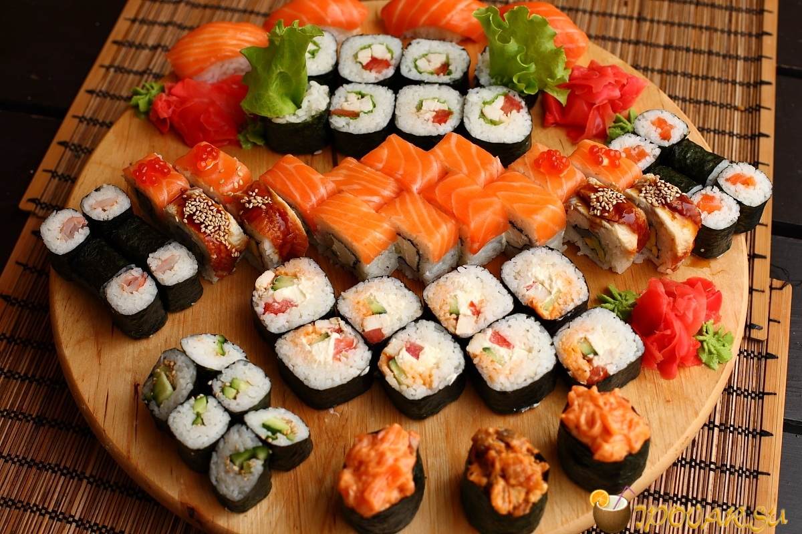

Sushi is love, embodied in every delicate piece of rice and fresh fish, a perfect balance of flavors and textures that delight the senses. It is a culinary art form, where each roll or sashimi slice tells a story of tradition, craftsmanship, and the deep appreciation of simple yet exquisite ingredients. Whether enjoyed in a fine dining restaurant or from a cozy corner sushi bar, sushi is a beloved expression of culinary passion that brings people together, creating moments of joy and connection over a shared meal.
